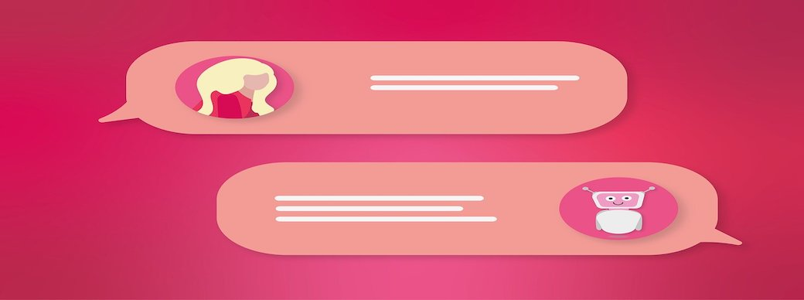

Chatbot for the Certificate Platform, IEEE SIES GST
An ingenious chatbot project that revolutionizes user interaction on websites. This narrative merges the realms of chatbot development, user engagement, and overcoming challenges, delivering an insightful journey into creating an AI-powered virtual assistant for IEEE's website.
Project Overview:
Revolutionizing User Interaction with Chatbots:
Embark on a journey that introduces the realm of chatbots - intelligent programs that simulate human conversation. From simple rule-based systems to sophisticated virtual assistants, chatbots elevate user interaction on websites, providing support, answering queries, and creating immersive experiences. This project unfolds the creation of a chatbot tailored for IEEE's website, enhancing user engagement and providing valuable information.
Chatbot Creation and Intent Analysis:
1. Motivation and Vision:
The driving force behind this chatbot project was to provide real-time support and information to users visiting IEEE's website. The chatbot aimed to serve as a knowledgeable assistant, catering to queries about the website, events, awards, and more. This vision laid the foundation for creating a user-friendly and informative virtual assistant.
2. Intent Analysis and Storyline Design:
To bring the chatbot to life, the project began by collecting potential user queries and understanding how users would interact with the bot. The key was analyzing intents - the motivations behind users' questions. This involved categorizing intents, such as greetings, inquiries, or seeking assistance, and creating a coherent storyline for the chatbot.
3. Model Implementation with RASA:
The chatbot's core was developed using RASA, an open-source library designed for natural language understanding and dialogue management. The library facilitated the creation of a dynamic chatbot capable of handling various user intents and providing relevant responses.
4. Testing and Real-world Deployment:
Ensuring the chatbot's effectiveness involved thorough testing using ngrok, which allowed real-world interaction. While the project had a steep learning curve, testing, and refining the model aided in building a responsive and engaging chatbot.
Challenges and Future Enhancements:
1. Complex Intent Resolution:
The journey was not without challenges. Determining intents and crafting coherent storylines proved intricate. The model's performance sometimes faltered, leading to unintended responses or premature farewells.
2. Enhanced Storyline Crafting:
To improve the chatbot's performance, enhancing storyline design and making it more robust could be beneficial. Providing a clear and context-aware dialogue framework can address the model's confusion during user interactions.